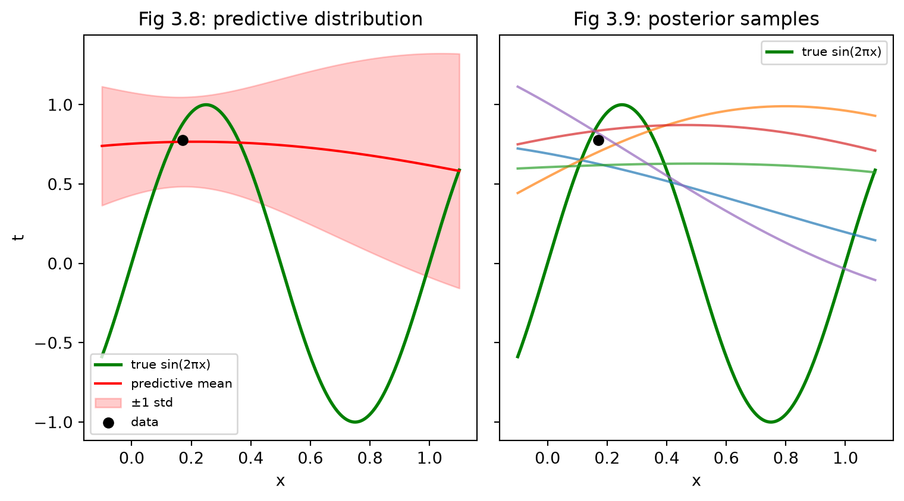
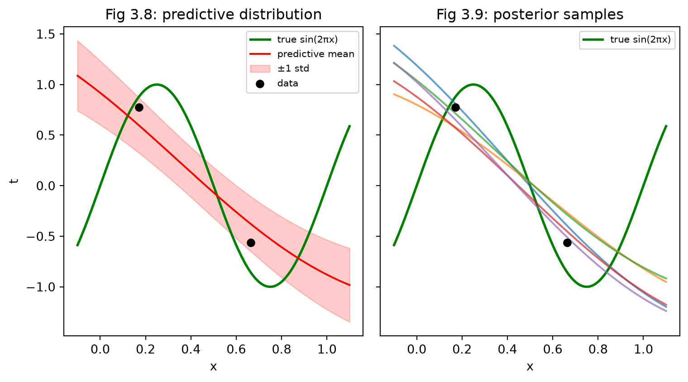
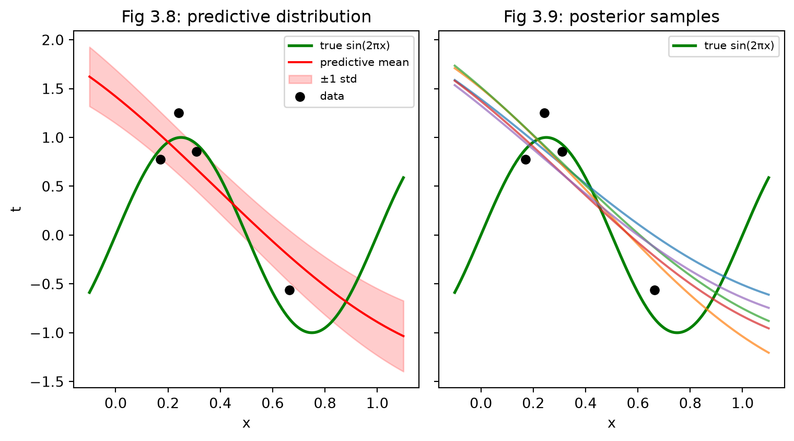
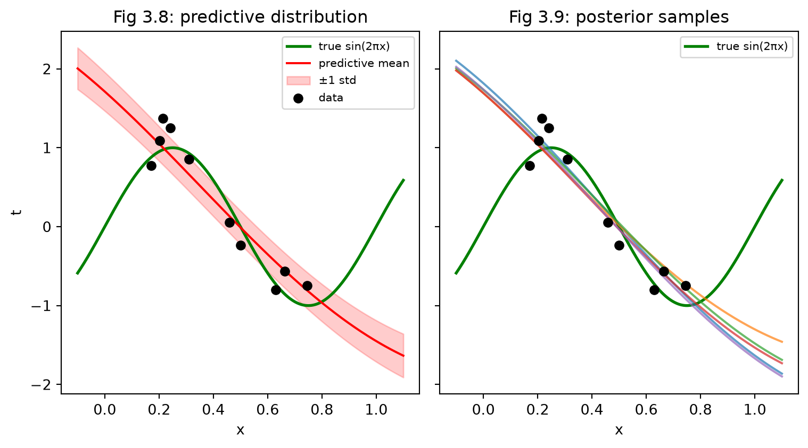

import numpy as np
x1 , t1 = 0.4, 0.6
x2, t2 = -0.2 , -0.9
mu1, mu2, mu3 = -0.5, 0, 0.5
alpha, beta = 2, 25
s = 0.5
def Gaussian_basis_function(x,mu,s):
return np.exp( - 0.5 * (x-mu)**2 /s**2)
def phi_calc(x,mus,s):
return [Gaussian_basis_function(x,mu,s) for mu in mus]
mus = [mu1,mu2,mu3]
phi_1 = phi_calc(x1, mus,s)
phi_2 = phi_calc(x2, mus,s)
phi = np.array([phi_1,phi_2]).reshape(2,3)In this post, we will discuss the predictive distribution in the context of Bayesian Linear regression. The goal of this post to plot and understand the predictive distribution and how the predictive uncertainty decreases as we see more and more data points .
The predictive distribution takes the form
\[ \begin{align*} \displaystyle p( t|x,t,\alpha ,\beta ) \ =\ \mathcal{N}\left( t|m_{N}^{T} \ \phi ( x) ,\sigma _{N}^{2}( x)\right) \tag{1} \end{align*} \]
where the variance \(\sigma_N^2(x)\) of the predictive distribution is given by \[ \begin{align*} \sigma_N^2(x) = \frac{1}{\beta} + \phi(x)^T S_N \phi(x) \tag{2} \end{align*} \]
The first term in equation (2) represents the noise in the data whereas the second term reflects the uncertainity associated with the parameters \(w\).
In the limit \(N \rightarrow \infty\), the second terms in equation (2) goes to zero, and the variance of the predictive distribution arises solely from the additive noise in the data governved by the parameter \(\beta\).
We now take an example where the data is generated from a sinusoidal function with additive Gaussian noise and fit a model comprising of Gaussian basis functions to data sets of various sizes.
Mathematical example to revisit matrix multiplications
- 3 Basis Functions
- 2 Data points
- \(\alpha = 2, \beta = 25\) \(m_N = \beta S_N \phi t_1\) \(S_n^{-1} = \alpha I + \beta \phi^T \phi\)
\[ \begin{align*} x_1 = 0.4 , t_1= 0.6 \text{ and } x_2 = -0.2, t_2 = -0.9 \end{align*} \]
\[ \begin{align*} \mu_1 = -0.5 , \mu_2 = 0 , \mu_3 = 0.5 , s = 0.5 \end{align*} \]
Calculating \(S_N\) and \(m_N\)
S = np.linalg.inv(alpha * np.eye(3) + beta * np.dot(phi.T, phi))
print(S)[[ 0.21634848 -0.19459824 0.08136045]
[-0.19459824 0.25319924 -0.14318142]
[ 0.08136045 -0.14318142 0.12713656]]Posterior Mean
\[ \begin{align*} &m_N = \beta S_N \phi^T t\\ &\phi^T t = t_1 \phi(x_1) + t_2 \phi(x_2) \end{align*} \]
phi_t = t1 * np.array(phi_1) + t2 * np.array(phi_2)
m_N = beta * np.dot(S,phi_t)Now the main example to plot
Steps : 1. The true function (Sinusoidal function) 2. Each plot should have the true plot, approximation from the model 3. The standard deviation
THE TRUE FUNCTION
# ---------------------------------------------------------------
# Basis function setup
# ---------------------------------------------------------------
import matplotlib.pyplot as plt
mus = np.array([-0.75, -0.5, -0.25, 0, 0.25, 0.5, 0.75, 1.0, 1.25])
s = 1.0
N = 500
x = np.random.rand(N)
t = np.sin(2*np.pi*x) + np.random.normal(0,0.2,N)
def phi_calc(x, mus, s):
"""Vector of 9 Gaussian basis function values at a single x."""
return np.exp(-0.5 * (x - mus)**2 / s**2)
# ---------------------------------------------------------------
# Posterior update (single data point version, eq. 3.50-3.51/3.53)
# ---------------------------------------------------------------
def compute_posterior(x, t, mus, s, alpha, beta):
"""
x, t : arrays of shape (N,) -- N data points
Returns m_N (posterior mean, shape (9,)) and S_N (posterior covariance, shape (9,9))
"""
x = np.atleast_1d(x)
t = np.atleast_1d(t)
Phi = np.array([phi_calc(xi, mus, s) for xi in x]) # shape (N, 9)
S_N_inv = alpha * np.eye(len(mus)) + beta * Phi.T @ Phi # eq. 3.51
S_N = np.linalg.inv(S_N_inv)
m_N = beta * S_N @ Phi.T @ t # eq. 3.50
return m_N, S_N
# ---------------------------------------------------------------
# Predictive mean/std across a grid (eq. 3.58-3.59) -- for Fig 3.8
# ---------------------------------------------------------------
def predictive_distribution(x_grid, m_N, S_N, mus, s, beta):
Phi_grid = np.array([phi_calc(x, mus, s) for x in x_grid]) # (200, 9)
mean_pred = Phi_grid @ m_N
epistemic_var = np.clip(np.einsum('ij,jk,ik->i', Phi_grid, S_N, Phi_grid), 0, None)
std_pred = np.sqrt(1.0/beta + epistemic_var)
return mean_pred, std_pred
# ---------------------------------------------------------------
# Sampled functions from the posterior -- for Fig 3.9
# ---------------------------------------------------------------
def sample_curves(x_grid, m_N, S_N, mus, s, n_samples=5, seed=0):
rng = np.random.default_rng(seed)
w_samples = rng.multivariate_normal(m_N, S_N, size=n_samples) # (n_samples, 9)
Phi_grid = np.array([phi_calc(x, mus, s) for x in x_grid])
return Phi_grid @ w_samples.T # (200, n_samples)
# ---------------------------------------------------------------
# Run it
# ---------------------------------------------------------------
alpha, beta = 2.0, 25.0 # set these to whatever you're using
x, t = x[0:10],t[0:10]
lst = [1,2,4,500]
for i in lst:
print(i)
m_N, S_N = compute_posterior(x[0:i], t[0:i], mus, s, alpha, beta)
x_grid = np.linspace(-0.1, 1.1, 200)
mean_pred, std_pred = predictive_distribution(x_grid, m_N, S_N, mus, s, beta)
curves = sample_curves(x_grid, m_N, S_N, mus, s, n_samples=5)
# ---------------------------------------------------------------
# Plot side by side
# ---------------------------------------------------------------
fig, axes = plt.subplots(1, 2, figsize=(8, 4.5), sharey=True)
# Figure 3.8 style — predictive mean ± std
ax = axes[0]
ax.plot(x_grid, np.sin(2*np.pi*x_grid), color='green', lw=2, label='true sin(2πx)')
ax.plot(x_grid, mean_pred, color='red', label='predictive mean')
ax.fill_between(x_grid, mean_pred - std_pred, mean_pred + std_pred,
color='red', alpha=0.2, label=r'$\pm1$ std')
ax.scatter(x[0:i], t[0:i], color='black', zorder=5, label='data')
ax.set_title("Fig 3.8: predictive distribution")
ax.set_xlabel("x"); ax.set_ylabel("t")
ax.legend(fontsize=8)
# Figure 3.9 style — sampled functions
ax = axes[1]
ax.plot(x_grid, np.sin(2*np.pi*x_grid), color='green', lw=2,label='true sin(2πx)')
ax.plot(x_grid, curves, alpha=0.7)
ax.scatter(x[0:i], t[0:i], color='black', zorder=5)
ax.set_title("Fig 3.9: posterior samples")
ax.set_xlabel("x")
ax.legend(fontsize=8)
plt.tight_layout()
plt.show()1
2
4
500